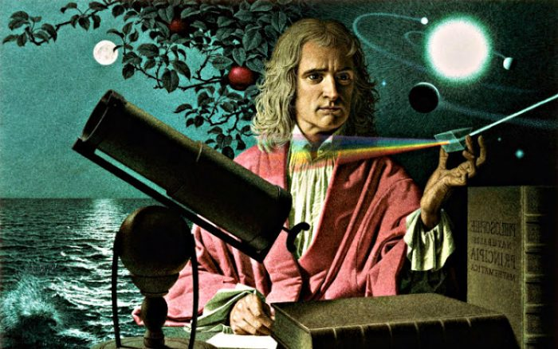

Ilustración de Sir. Isaac Newton y de sus principales obras y descubrimientos.
Linea de tiempo de Sir. Isaac Newton:
- 1642 - Nace en Woolsthorpe, Gran Bretaña.
- 1661 - Ingresa en el Trinity College de Cambridge.
- 1666 - Primeras ideas sobre la ley de la gravitación universal, suscitadas por la contemplación de la caída de las manzanas, según la célebre anécdota.
- 1669 - Sucede a Isaac Barrow como profesor de matemáticas.
- 1671 - Escribe Método de fluxiones y de las series infinitas.
- 1675 - Lectura en la Royal Society de su Hipótesis para explicar las propiedades de la luz.
- 1687 - Primera edición de los Principios matemáticos de la filosofía de la naturaleza, en que establece las tres leyes fundamentales de la física y la ley de la gravitación universal.
- 1688 - Es elegido miembro del Parlamento, en representación de la Universidad de Cambridge.
- 1699 - Es nombrado director de la Casa de la Moneda.
- 1703 - Es elegido presidente de la Royal Society, cargo que ocupará hasta su muerte.
- 1704 - Se publica la primera edición de la Óptica o Tratado de las reflexiones, refracciones, inflexiones y colores de la luz.
- 1705 - Se le otorga el título de sir.
- 1713 - Segunda edición de los Principia.
- 1718 - Segunda edición de la Óptica.
- 1727 - Muere en Londres
"Lo que sabemos es una gota de agua; lo que ignoramos es el océano"
Sir. Isaac Newton